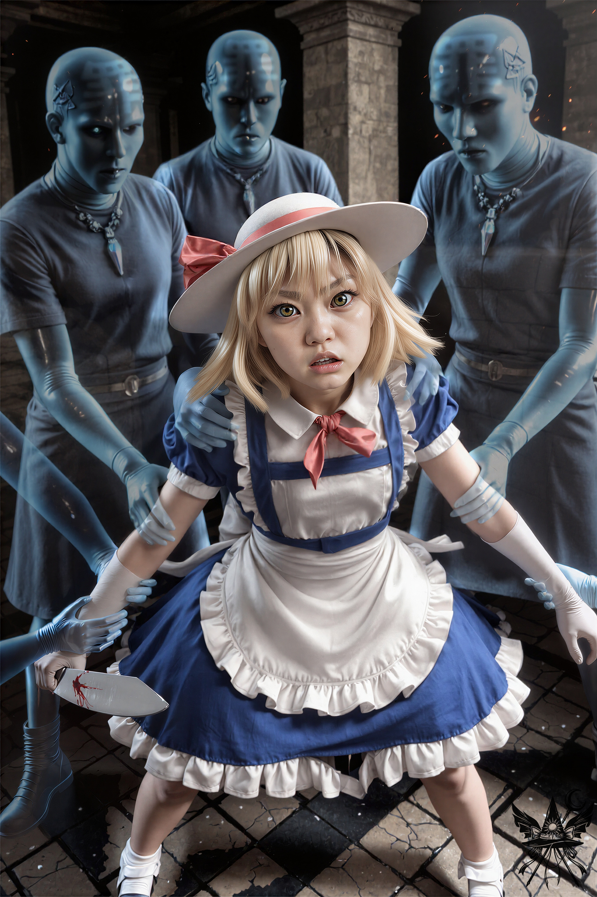
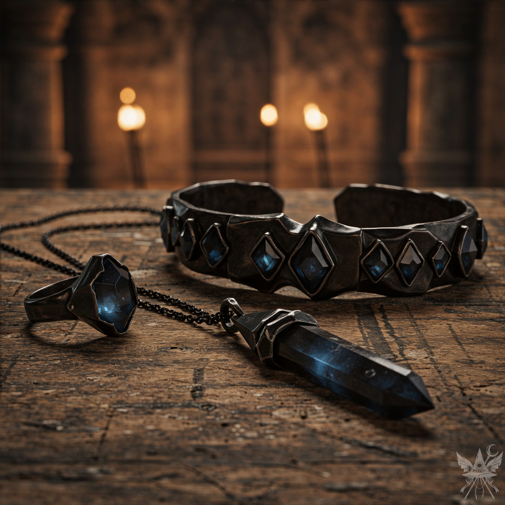

コンガラは、血の滲む包帯を乱暴に解き始めた。傷口は塞がりかけていて致命的な出血はないものの、じわりと赤い滴が石のベンチを汚していく。その顔には、疑念のかけらすら浮かんでいない。
（血を見るのは平気だけれど……あの石頭の頑迷さには、虫唾が走るわ）
「お待ちください！」
冷たい石室に、声を張り上げる。
「その包帯は止血のために巻いただけです。殺すつもりなら、あの場でやっていました。少しは考えてください、コンガラ様！ 騙されているのですよ！」
重い手がピタリと止まった。言葉の刃が、わずかに疑念の種を蒔いたらしい。
「包帯を外せば、明羅は死んでしまいます。それでも構わないのですか？ コンガラ様は、明羅を失いたいのですか？」
厳格な武人の目に、葛藤の濁りが生じる。
（まだ迷っている……押し切るなら今ね！）
「さっさと包帯を外して、裏返してください！」
背後から、苛立ちを隠そうともしない声が飛んだ。カナだ。
「罪深い血を全部出し切らないと、明羅姉さまはあの鬼女どもと同じになっちゃいます！ この二人、明羅姉さまを殺す必要なんてなかったのよ！ 言いなりのゾンビが欲しかったんだから！」
（よく言うわ。一体誰が誰を操ろうとしているのかしら……）
コンガラは、傷口からゆっくりと血が滲み出る明羅をベンチに横たわらせたまま、数歩後ずさった。彼にとって、それが精一杯の譲歩なのだろう。
畳み掛けるように、カナを睨みつける。
「嘘をついているのはカナのほうです！ 一体何のために私たちを尾行したのですか？ まさか、ただの暇つぶしとは思えませんけれど」
カナが意地悪くにやりと笑った。
「まず一つ目。逆に聞くけど、なんで図書室の掃除をサボって、関係ないことに首を突っ込んでるわけ？ 二つ目。だからこそ、あんたを見張ってたのよ。わかった、魔女さん？ ここへ来た理由が申請書に書いてあるのと違うことくらい、最初っからお見通しなんだから！」
（上手いこと言うわね……。確かに、目的については言い返せない。このポルターガイストめ、都合のいいように真実と嘘を織り交ぜやがって）
「違います！」
一切の動揺を見せず、語気を強める。
「カナが怪しいと思って尾行したのです。謎解きは得意ですので」
そして、うつろな目で床を見つめる窓付きを指差した。
「『こんな幼い子が人を殺せるわけない』と、カナは言っていましたよね？ でも、この子が明羅に包丁を振りかざすところを、この目で見ています。この子をここに誘い込んだのはカナです。窓付きが無実かどうか確かめるために、解放して包丁を返してみてはいかがでしょう？」
「ちょっと！」
小兎姫が顔を真っ赤にして叫んだ。
「私たちを危険にさらす気！？」
だが、コンガラは意外にもその提案に頷いた。
「よかろう。子供を解放せよ」
青白い肌をした幽霊たちが窓付きを抱え上げ、少し手間取りながらも拘束を解く。
床に崩れ落ちそうになった小さな体に寄り添い、目線を合わせて優しく語りかける。そして、カナを指差した。
「この人、知っている？」
窓付きは依然として俯いたまま、力なく首を振る。
「大丈夫、怖がらなくていいのよ。誰も傷つけないから。この世界にはどうやって来たの？」
「……門を……通って……」
か細い呟きが、冷たい空気に溶ける。
ローブの内ポケットから、小兎姫から取り上げた包丁を取り出し、窓付きの目の前に差し出した。
「これ、窓付きちゃんの？」
「……うん……」
小さく頷く。
小兎姫が眉をひそめ、じりじりと後ずさる。
「本当に返す気？ 襲われても知らないわよ」
ドレスの下へ手を伸ばすその仕草は、いつでも警棒を引き抜けるよう警戒している証拠だ。
窓付きは力なく包丁を受け取った。しかし、それ以上何もする様子はなく、ただ鈍く光る刃を見つめているだけだった。
「この魔女どもめ！ 窓付きちゃんに罪の種を植え付けたに違いありません！」
カナは諦めず、コンガラにすがりつくように訴えかけた。
「この子は完全に操られています！ だから、あの言葉は証拠になりません！ それより、明羅姉さまを傷つけた包丁をこの女が持っていたことこそ、動かぬ証拠でしょう？ コンガラ様！」
コンガラは重々しく頷いた。
「二人を捕らえよ！ 牢獄へ連行し、尋問にかけるのだ！」
「二人とも、今すぐ処刑すべきです！ この世の脅威を野放しにしておくわけにはいきませんわ！」
カナはまだ止まらない。
無機質な幽霊たちが群がり、背中合わせに立たされた状態で腕をねじり上げられる。魔導書が乱暴に奪い取られた。拘束の痛みに耐えながら、背後の小兎姫に素早く耳打ちする。
「生き延びたかったら、私の言葉に合わせてください」
微かな頷きが背中越しに伝わる。
「カナ・アナベラル！」
冷たい石室に響き渡る声で呼びかけた。
「私が幻想郷にいた時、エレンという魔女の店へ行ったことがあるのだけれど……」
「だから何？ 罪深い幻想郷のお店なんて、私に何の関係があるのよ？」
「あなた、その店の屋根裏部屋に住んでいたわよね？」
「そこでドレスを縫っていたのよ。覚えていないの？」
小兎姫がすかさず同調する。
「まあ、あなたが博麗神社から追い出された後の話だけれどね」
コンガラが手で制止する仕草を見せると、幽霊たちの動きがピタリと止まった。威厳ある瞳が、注意深くこちらを見据える。
「何の話よ！？ この二人、グルなんです！ こそこそ話させないでください！ 博麗霊夢なんて、私、知りません！」
「霊夢？ なんで下の名前まで知っているのかしら？」
小兎姫の唇の端が、歪に吊り上がる。
「あんたたちがしゃべってるのを聞いたのよ！ 私、秘書ですから、何でも知ってなきゃいけないんです！ コンガラ様、ぐずぐずしないで、さっさと縛って、猿轡もかませちゃってください！」
「ねえ、カナ。やっぱり何も教えてくれないの？」
困ったような、ひどく白々しいため息をついてみせる。
「ここで何をしているの？ なんでエレンのところを離れたの？ 邪魔する人が現れたとか？ 誰？ もしかして太郎、それとも誰か違う人？ で、これはエレンを取り戻すため？」
カナは両手で帽子をぎゅっとつかみ、思いきり顔をしかめた。
「無駄な抵抗はやめて、哀れなポルターガイスト。私が最後にエレンに会った時、彼女は仲間と幸せそうに暮らしていたわ。カナはもう必要ないのよ。それとも、コンガラ様に頼んでエレンをここに連れてきてもらいましょうか？ エレンはきっと、カナを知らないって言うでしょうね。カナのことなんて、もう知りたくないんだから」
その瞬間、張られていた糸が弾け飛んだ。
カナは窓付きの手から刃物を奪い取ると、狂ったように目をぎらつかせて一直線に突っ込んでくる。
「エレンのことを……エレンのことを、口にするなーっ！！」
咄嗟に身をかわそうとするが、冷たい刃がローブを切り裂き、鋭い痛みが腕を走った。だが、次の瞬間には、圧倒的な質量を持つ冷気が荒れ狂う暴力を押さえ込んでいた。

無機質で彫像のような青白い肌が、逃げ場のない檻となって細い腕を拘束している。息詰まるような沈黙の中で、乱れた呼吸と尋常ではない熱気だけが異様に浮き立っていた。握りしめられた冷たい金属の重みと、そこにべっとりとこびりついた生々しい罪の痕跡が、何よりも雄弁に真実を語っている。
「この魔女たちが私に催眠術をかけたんです、コンガラ様！ コンガラ様にも同じことをする気よ！ 離して、離しなさいよ、このろくでなし！」
コンガラは静かに歩み寄り、底知れぬ怒りを孕んだ視線で見下ろした。
「貴様……博麗神社の者だったのか……？」
それでもカナは叫び続けた。
「コンガラ様、罪人たちが命を狙ってます！ あいつらを罰するには、今すぐご自分の剣でご自分を刺すしかありません！」
「牢屋に入れろ！」
＊＊＊
狂騒が去った後、小兎姫の指示で静かなる泉へと運ばれた。血まみれのローブを脱ぎ捨て、濡れた石の床に足を取られないよう慎重に湯船へと身を沈める。腕の傷はゆっくりと塞がっていくが、キクリの姿はどこにもない。
（創造主の恩恵を無駄にするわけにはいかない……。もう一度、あの幻視を見ないと）
深く息を吸い込み、ざわつく水面の下へと頭まで潜り込んだ。
白濁した光が、意識を優しく包み込む。
「メデア……そなたは……やって来ましたね……わたくしは……そなたを……待っておりました……」
「キクリ様、お久しぶりです。もう事情は分かっています。回りくどい言い方は不要でしょう」
「そうか……愛しいコンガラを……救ってくれて……ありがとう……」
（救った……？ ああ……あの石頭に巣食う寄生虫を祓ったぐらいね。本当に、この世界の住人は全員どこかおかしいんじゃないかしら）
「わたくしの頼みを……覚えておりますか……？ この世界を……再び蘇らせてほしいのです……」
「ええ、もちろんです。約束通り、報酬はいただけるのですよね？」
「もちろんですとも。わたくしを解放すれば、そなたも想像もつかなかった力を手に入れるじゃろう」
途切れそうになる意識を繋ぎ止め、水面へと顔を上げた。
腕の刺し傷は薄い皮膚で覆われ、小さな痕を残すのみとなっていた。振り返ると、湯気の向こうで穏やかな時間が流れている。
むせ返るような湿度と熱気の中、冷たく硬い石壁の感触だけが現実を繋ぎ止めている。激しい暴力の爪痕を刻まれた肌を、労わるような献身的な手がゆっくりと滑っていく。張り詰めていた糸が切れ、無防備な安息に身を委ねる静謐な空間には、もはや疑心や敵意が入り込む余地はなかった。
「どう？ 少しは楽になった？」
小兎姫が、労わるような声をかける。
「ええ、もう大丈夫です。明羅さんは……？」
「かなりの出血だったから、すぐには元気にならないだろうけれど、命に別状はないわ」
薄く目を開いた明羅が、ひどく弱々しい声で呟く。
「……あ……ありがとう。命を救ってくれて……感謝します」
「気にしないで。早く元気になってね」
そのやり取りを見届け、静かに問いかける。
「ところで、あの小さな子を地獄に連れてきて、明羅さんを襲わせたのはカナだったのですよ」
「カナ……？ カナ・アナベラルがそんなことを！？ すぐにコンガラ様に……！」
跳ね起きようとした体は、力なく崩れ落ちた。
「大丈夫、アナベラルは牢屋よ。あの女の子もね」
小兎姫が余裕を含んだ声で制止する。
「ここの鉄格子は罪人の魂を閉じ込めるために作られているから、ポルターガイストでも逃げ出すことはできないわ」
明羅は悔しそうに唇を噛み、やがて小兎姫を見上げた。
「小兎姫さん……私なんかより……あなたの方が……司令官にふさわしいです……それに……今は戦えませんし……あなたが……その地位に……」
「任せて。この静かなる神殿は私が守ってみせるわ」
ひどく満足げな笑みが、湯気の向こうで揺れた。
湯船から上がり、着替えを済ませて中央ホールへ向かう。その道すがら、ローブの内ポケットに不自然な重みを感じた。二つの小さなリンゴとオレンジ。コンガラたちの密談を盗み聞きした際、テーブルから失敬したものだ。
（一体いつの間に……？ 完全に忘れていたわ）
ホールでは、すっかり憔悴しきったコンガラが待ち構えていた。その威厳ある顔に、今は微かな安堵の色が浮かんでいる。
「疑いを抱いたことを詫びる、見習いよ。我も明羅殿も、そなたの働きを決して忘れぬ。その証として、そなたと婦警に贈り物を授けよう。さあ」
使い込まれた傷だらけのテーブルに、精巧な彫刻が施された三つの木箱が置かれる。
「一つだけ選ぶがよい。その後、婦警にも選ばせる」
中央の箱が開かれる。

温かみのある炎の揺らめきとは対極にある、ひどく冷たく、重苦しい静寂がそこにあった。鈍い光沢を放つ金属と、光を飲み込むような深淵の色をした石。ただの装飾品ではない、何らかの呪縛を内包した道具特有の圧迫感が、どれを選んでも後戻りできない運命を突きつけてくる。
「これは静かなる護符。邪念から身を守ってくれる。こちらは静かなる腕輪。邪悪な呪文を封じる力を持つ。そして、静かなる指輪。これを嵌めた者は、悪しき行いを為せなくなるのだ」
（皮肉な贈り物ね……。どれも魅力的だけれど、こんなもので私の心を縛れるとでも？ 笑わせるわ）
「もったいないお言葉です。では、ありがたく護符を頂戴します」
恭しく頭を下げ、冷たい石を手に取った。
その時、ホールの静寂を切り裂くように、甲高い悲鳴が響き渡った。
「コンガラ様！ 囚人が脱獄しました！」
転がり込むように駆け込んできた幽霊の兵士が、床に這いつくばる。
「何だと！？ 誰が脱獄したのだ！ 役立たずめ！」
コンガラは激昂し、今にも兵士を踏みつけんばかりの勢いで怒鳴りつけた。
「カ……カナが……まるで霧のように……消えて……！」
（あの鉄格子は特別製だと言っていたのに……。ポルターガイストって、そんなに簡単に消え去ることができるのかしら？）
牢獄の方から、忌々しげな足音を立てて小兎姫が戻ってくるのが見えた。慌ててコンガラの後を追い、薄暗い地下へ降りる。カナが閉じ込められていた独房はすっかり空っぽになり、隣の冷たい石室には、窓付きが一人だけ取り残されていた。
「小娘！」
コンガラの怒声が響く。
「カナはどこへ行ったのだ？ 知っておるなら、答えろ！」
怯えきった少女は、震える声で鉄格子越しに訴えた。
「……知りません……。窓付きは……誰も傷つけてない……。ここから出して……。お願い……、この夢……悪夢なの……。早く……目を覚ましたい……」
その悲痛な叫びも、怒りに支配された君主の耳には届かない。
「全員！ 神殿全体を捜索しろ！ カナを見逃すな！」
兵士たちに怒号を浴びせた後、コンガラは小兎姫に向き直った。
「婦警、明羅殿が回復するまで、そなたを司令官代理に任命する。カナを見つけたら……生かしておく必要はない」
メデアを一瞥することもなく、コンガラと小兎姫は足早に牢屋を後にした。残された窓付きの虚ろな瞳が、暗がりの中からこちらを見つめている。
（さて、これからどうする？ カナは逃亡し、明羅はまだ回復していない。小兎姫は司令官代理に就任。コンガラは混乱の極みにあり、状況は悪化の一途を辿っている。正午には幽香の召使いがポータルを開きに来るはずだけれど……キクリを解放するには魔界へ行かなければならない。この子を助け出す……？ いや、連れて逃げたところで足手まといになるだけ。それに、この子が本当に無実なのかすら、まだ分からないのだから）